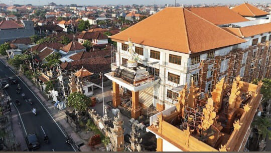

Profil Saya
Nama Lengkap: Ferdi
Tempat Tanggal Lahir: Kako' 19 Maret 2004
Kota Asal: Desa Kalemago, Kecamatan Lore Timur, Kabupaten Poso, Sulawesi Tengah
Tempat Tinggal Sekarang Di: Bali
Sedang Menempuh Pendidikan Di Kampus: UHN I Gusti Bagus Sugriwa Denpasar
Prodi: S1 Informatika
NIM: 2413231013
Foto Diri

Logo dan Foto Kampus


Deskripsi: UHN menjadi Universitas Hindu Negeri pertama di Indonesia. Tokoh I Gusti Bagus Sugriwa dipilih sebagai nama dari Universitas Hindu Negeri karena beliau merupakan sosok yang punya pengaruh dan andil atas jasanya memperjuangkan agama Hindu sebagai agama yang diakui oleh Pemerintah Indonesia. Selain memiliki intelektual Hindu, beliau juga dikenal memiliki jiwa kejuangan dan nasionalisme yang tinggi. Oleh karena itu, I Gusti Bagus Sugriwa merupakan sosok yang sangat dihormati.
Foto Rumah

Lokasi Rumah
Deskripsi: Desa Kalemago di Kecamatan Lore Timur, Kabupaten Poso, Sulawesi Tengah, adalah permukiman subur di Lembah Padang Napu yang asri. Pertanian menjadi penopang utama, di mana petani kini fokus pada pengembangan budidaya kopi, kakao dan Sayur-Sayuran yang berkelanjutan.